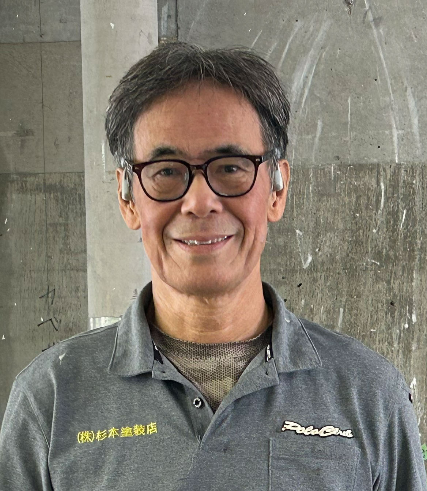

3代目杉本社長のメッセージ・会社概要

3代目代表取締役
杉本 茂光
■ 明治生まれの祖父から続く、90年の歴史と3代目としての「覚悟」
――昭和11年の創業から、今年でいよいよ90周年を迎えられますね。杉本社長は3代目となられますが、この大きな節目を迎えられて今どのようなお気持ちですか？
杉本社長：やはり、歴史の重みと責任を強く感じています。もともとは明治生まれの私の祖父が、神田の職人のもとへ弟子入りしたところから杉本塗装店の歴史は始まりました。その後、親父が高度経済成長期の波に乗えて会社を拡大させていったんです。
――最初から家業を継ぐと決めていらっしゃったのですか？
杉本社長：いや、実は最初は継ぐつもりはなかったんですよ。前職のリクルートでの仕事にやりがいを感じていましたし、そのまま続けるつもりでした。ですが、長年会社を支えてくれているベテランの職人たちから「お前がやらなかったら、俺たちはどうなるんだ？」と熱く引き止められましてね。その言葉に突き動かされ、「この伝統と職人たちの生活を守るんだ」と腹をくくりました。
――先代から受け継いだ「これだけは譲れない」という魂は何でしょうか？
杉本社長：親父からは「日本の塗装職人の中で、技術力は常にトップである」という強烈なプライドを持つよう叩き込まれました。ただ、同時に「どれだけ腕が良くても、絶対に傲慢になってはいけない。常に謙虚さを持ってお客様に対応しなさい」とも言われ続けてきました。この「圧倒的な技術力と、誠実で謙虚な姿勢」の両立こそが、私たちの魂ですね。
■ 日本最高峰の現場で磨かれた「技術」と「こだわり」
――その高い技術力を裏付ける、具体的な実績を教えていただけますか？
杉本社長：私たちは、坪単価150万円以下では建てられないような、日本最高峰の高級住宅を手がける工務店様の塗装を長年任されています。また、成城などの著名人・文化人の方々の邸宅、さらには高い技術が求められる神社仏閣や文化財の塗装も数多く担当してきました。
――それほどの技術を、現代の職人さんたちにはどのように継承しているのですか？
杉本社長：今の時代、「早い、安い」を求める風潮がありますが、うちは真逆です。「とにかく時間をかけてでも最高の仕事をしろ」と徹底的に叩き込みます。職人の気質は時代とともに変わっても、杉本塗装店としてのクオリティの基準は絶対に落としません。
■ メーカー直通の「最新技術」と、健康へのこだわり
――伝統を守る一方で、新しい技術や時代の変化にはどのように対応されていますか？
杉本社長：私たちは日本ペイントや関西ペイントといった一流塗料メーカーと「直接」連絡が取れる体制を整えています。メーカーとダイレクトにつながることで、最先端の工法や塗料の特性がいち早く入ってきます。伝統の職人技に最新科学を掛け合わせ、常に最適な判断をご提案しています。
また、私自身が過去に重度のアトピー性皮膚炎を発症した経験から、お客様の健康住宅へのこだわりには非常に強く共感しています。その取り組みが評価され、ドイツの自然塗料メーカー「オスモ社」から東京で唯一のマイスター会員にも認定されました[cite: 14]。安心してお気軽にご相談ください。
■ 地域の皆様へのメッセージ
――最後に、ホームページを見て外壁塗装をどこに頼むか悩まれている施主様へメッセージをお願いします。
杉本社長：下請け業者に丸投げして手抜き工事をされてしまうケースも少なくありません。だからこそ、私たちは基本的に下請けを使わず、自社の職人で一軒一軒に向き合っています。年間50〜100件限定で、私たちが責任を持てる規模だけで丁寧に仕事しています。なんだかんだで「最終的に杉本塗装店に頼んでおけば間違いない」と自信を持って言えます。大切なマイホームを次の世代へ美しく残したいとお考えなら、ぜひ私たちにご相談ください。
お問い合わせ・ご相談
お電話でのご相談
03（3482）3348
受付時間 8:00〜19:00（日曜定休）
メールでのお問い合わせ
fwkp5638@nifty.com
会社概要
会社名：株式会社 杉本塗装店
創業：昭和11年（今年で90周年）
所在地：〒151-0071 東京都世田谷区千歳台1丁目39-12
許可番号：建築業の許可番号 東京都知事許可（般-4）第17926号
主な事業内容：神社仏閣・文化財塗装、高級注文住宅塗装、一般家屋塗装・防水工事、内装塗装・自然塗料施工